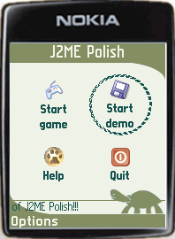

Adding a custom border requires the same steps as for creating a custom background. Instead of extending the Background class, we need to extend the de.enough.polish.ui.Border class. For the server-side the de.enough.polish.preprocess.BorderConverter needs to be extended.
Please note that borders currently do not support the animate()-method, so if you want to use animated borders, you need to implement them with a Background class.
For this example we create a project called "border-project" and add the files "enough-j2mepolish-build.jar", "enough-j2mepolish-client.jar" and the "midp2.jar" to the classpath of the project. These files can be found in the "import" folder of the J2ME Polish installation directory. Please note that this border is now directly available in J2ME Polish from version 1.0 onwards.
We create a border which should draw a round border around items. The color, width and stroke-style of the border should be customizable:
//#condition polish.usePolishGui
package com.company.borders;
import javax.microedition.lcdui.Graphics;
import de.enough.polish.ui.Border;
public class CircleBorder extends Border {
private final int strokeStyle;
private final int color;
private final int borderWidth;
public CircleBorder( int color, int width, int strokeStyle ) {
super();
this.color = color;
this.borderWidth = width;
this.strokeStyle = strokeStyle;
}
public void paint(int x, int y, int width, int height, Graphics g) {
g.setColor( this.color );
boolean setStrokeStyle = (this.strokeStyle != Graphics.SOLID );
if (setStrokeStyle) {
g.setStrokeStyle( this.strokeStyle );
}
g.drawArc( x, y, width, height, 0, 360 );
if (this.borderWidth > 1) {
int bw = this.borderWidth;
while (bw > 0) {
g.drawArc( x + bw, y + bw, width - 2*bw, height - 2*bw, 0, 360 );
bw--;
}
}
if (setStrokeStyle) {
g.setStrokeStyle( Graphics.SOLID );
}
}
}
The #condition-directive ensures that this class is only used when the GUI of J2ME Polish is actually used. In the paint()-method the border is rendered to the screen. When a different stroke-style than Graphics.SOLID is used, we set that style and reset the style in the end of the paint()-method. This is a J2ME Polish specific convention, since the Graphics.DOTTED stroke style is hardly ever used.
The server side border class reads the CSS-attributes from the polish.css file and creates the code for initializing a new border. The class needs to extend the de.enough.polish.preprocess.BorderConverter class:
//#condition false
package com.company.borders;
import java.util.HashMap;
import org.apache.tools.ant.BuildException;
import de.enough.polish.preprocess.BorderConverter;
import de.enough.polish.preprocess.Style;
import de.enough.polish.preprocess.StyleSheet;
public class CircleBorderConverter extends BorderConverter {
public CircleBorderConverter() {
super();
}
protected String createNewStatement(
HashMap border,
Style style,
StyleSheet styleSheet )
throws BuildException
{
String strokeStyle = (String) border.get("stroke-style");
String strokeStyleCode;
if (strokeStyle != null) {
if ("dotted".equals(strokeStyle)) {
strokeStyleCode = "javax.microedition.lcdui.Graphics.DOTTED";
} else {
strokeStyleCode = "javax.microedition.lcdui.Graphics.SOLID";
}
} else {
strokeStyleCode = "javax.microedition.lcdui.Graphics.SOLID";
}
return "new de.enough.polish.extensions.CircleBorder( "
+ this.color + ", " + this.width + ", " + strokeStyleCode + ")";
}
}
The BorderConverter already parses the color and width of the border. The color defaults to black and the width defaults to 1. So we only need to parse the desired stroke-style. Unless "dotted" is defined, we assume that the Graphics.SOLID stroke-style should be used.
There are some helper methods for parsing the CSS-attributes: parseInt( String attributeName, String attributeValue ), parseFloat( String attributeName, String attributeValue ), parseColor( String colorValue ) and getUrl( String url ).
We included the #condition "false", so that this file is never included in the J2ME application. This is useful when the same source folder is used for the client-background-class as well as the server-background-class.
To use our background, we need to ensure that the classes can be found and to use it in the polish.css file:
At first we make sure, that the classpath includes our border-project. The easiest way is to do this in the definition of the J2ME Polish task within the build.xml:
<taskdef name="j2mepolish" classname="de.enough.polish.ant.PolishTask" classpath="import/enough-j2mepolish-build.jar:import/jdom.jar: import/proguard.jar:../border-project/bin/classes" />
Secondly we need to inform J2ME Polish about the additional source-folder.We do this by specifying the "srcDir"-attribute of the
<j2mepolish>
[...]
<build
symbols="ExampleSymbol, AnotherExample"
imageLoadStrategy="background"
fullscreen="menu"
usePolishGui="true"
srcDir="source/src:../border-project/source/src"
>
[...]
</build>
</j2mepolish>
Thirdly and lastly we need to use the new background in the "resources/polish.css" file of our application. As the type we need to define the SERVER-side converting class:
focused {
padding: 5;
background: none;
border {
type: com.company.borders.CircleBackgroundConverter;
width: 2;
color: fontColor;
stroke-style: dotted;
}
font {
style: bold;
color: fontColor;
size: small;
}
layout: expand | center;
}
Now we can build the application by calling Ant to check the result:

Please refer to these JavaDoc resources for detailed information: